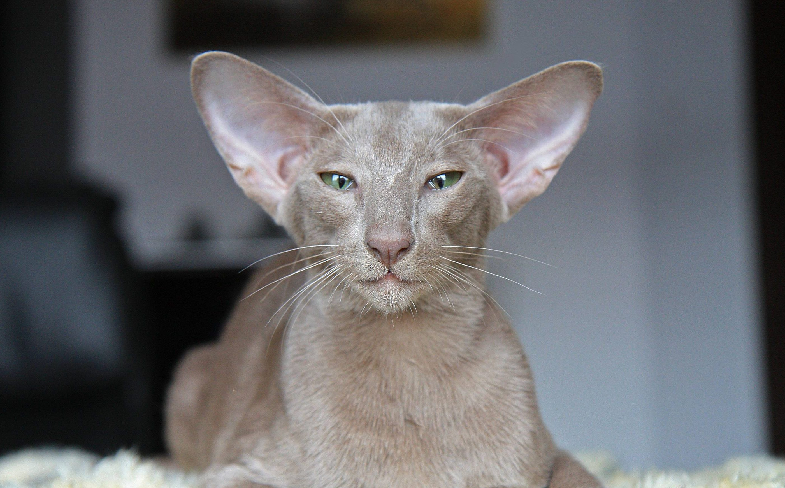

Если у вас скоро появится кошка

Скоро в Вашем доме появится новый обитатель – котёнок. Что нужно для того, чтобы ваше совместное существование стало наиболее комфортным?
Рекомендую сразу покупать лоток «на вырост», ведь котёнок растёт очень быстро и, если вы купите маленький лоток на первое время, очень скоро может возникнуть такая ситуация, когда ноги котёнка будут внутри, а попа уже на улице. Самый лучший вариант — это лоток с высокими съемными бортами, загнутыми внутрь, чтобы наполнитель не высыпался из лоточка в момент закапывания, или домик-туалет с дверцей, который позволяет котёнку уединиться, а вам сохранить чистоту даже с самой роющей кошкой. Выбор наполнителей для туалета очень большой. Поэтому стоит ориентироваться на свой кошелек и на количество кошек, проживающих в вашем доме. Я рекомендую впитывающий (самый дешёвый вариант), комкующийся (самый экономичный вариант) или силикагелевый наполнитель.
От древесного я советую воздержаться, единственное его достоинство — это низкая цена и экономичность, но при этом от него много мусора, специфический запах лесопилки и, что самое неприятное, многие кошки отказываются от такого туалета, им не нравятся крупные гранулы и громкий звук при рытье. Также необходимо купить совочек, чтобы убирать продукты жизнедеятельности кошек из наполнителя. Особенно важно это, если используется комкующийся наполнитель.
Кормушка и поилка должны быть раздельные (не в моноблоке), так как часто корм попадает в воду и вода закисает, тогда возникает необходимость промыть ёмкость и освежить воду. Рекомендую выбирать посуду из жести, керамики или стекла, так как у некоторых кошек случаются аллергические реакции на пластик и появляются прыщи на мордочке.
Кошки
- Мейн-кун

- Шотланская вислоухая кошка

- Бенгальская кошка

- Ориентальная кошка

- Сибирская кошка

О нас
Мы независимая организация по защите животных.